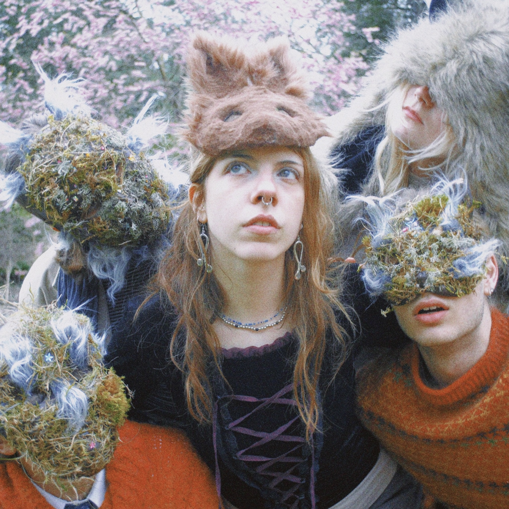

ada cakmakli --- beastarium
beastiarium er ada cakmakli’s andet soloalbum efter en lang hiatus. Det er et storslået projekt lavet sammen med venner og dygtige musikere. Albummet prøver at fange alle livets mest finurlige og varme oplevelser, på det soniske såvel som og tekstlige plan.
Lydmæssigt finder beastiarium sig meget i indie-folk/melancholic acoustic verdenen, med ada’s indviklede guitarspil og intuitive vokaler. Der gemmer sig også mange flere instrumenter på de forskellige tracks.
Ada fortæller historier både om det introspektive - men også om de særlige og magiske oplevelser, som nogen som helst kan relatere til. beastiarium er tungt inspireret af dyr og natur, samt kærlighed, depression og eufori.
Musik og produktion af ada cakmakli. Mix og master af Rasmus Rosenkvist Thomsen.
Lydmæssigt finder beastiarium sig meget i indie-folk/melancholic acoustic verdenen, med ada’s indviklede guitarspil og intuitive vokaler. Der gemmer sig også mange flere instrumenter på de forskellige tracks.
Ada fortæller historier både om det introspektive - men også om de særlige og magiske oplevelser, som nogen som helst kan relatere til. beastiarium er tungt inspireret af dyr og natur, samt kærlighed, depression og eufori.
Musik og produktion af ada cakmakli. Mix og master af Rasmus Rosenkvist Thomsen.
